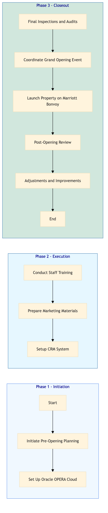

| Role | Steps |
|---|---|
| Property Manager | 1.1 3.4 3.5 |
| IT Manager | 1.2 2.3 3.5 |
| Training Manager | 2.1 |
| Marketing Manager | 2.2 |
| CRM Manager | 2.3 |
| Quality Assurance Manager | 3.1 |
| Event Manager | 3.2 |
| Loyalty Manager | 3.3 |
| Step | Name | Role | System | Input | Output | KPI | Dec? | Exc? | Pain Point / Risk |
|---|---|---|---|---|---|---|---|---|---|
| 1.1 | Initiate Pre-Opening Planning | Property Manager | Oracle OPERA Cloud | Approval letter from franchisor | Pre-opening plan document | Less than 5 days | N | Y | Resource allocation for pre-opening team |
| 1.2 | Set Up Oracle OPERA Cloud | IT Manager | Oracle OPERA Cloud | Pre-opening plan document | Configured Oracle OPERA Cloud system | Less than 1 week | N | Y | Integration with other Marriott systems |
| 2.1 | Conduct Staff Training | Training Manager | Oracle OPERA Cloud, Knowcross HotSOS | Configured Oracle OPERA Cloud system | Trained staff list | Less than 2 weeks | N | Y | Staff retention during training |
| 2.2 | Prepare Marketing Materials | Marketing Manager | Salesforce, Microsoft Power BI | Trained staff list | Marketing campaign plan | Less than 1 week | N | Y | Budget constraints for marketing materials |
| 2.3 | Setup CRM System | CRM Manager | Marriott Bonvoy CRM | Marketing campaign plan | Configured CRM system | Less than 1 week | N | Y | Data migration from previous systems |
| 3.1 | Final Inspections and Audits | Quality Assurance Manager | Oracle OPERA Cloud, IDeaS G3 RMS | Configured CRM system | Inspection report | Less than 2 days | Y | N | Non-compliance with Marriott standards |
| 3.2 | Coordinate Grand Opening Event | Event Manager | SynXis CRS, Book4Time | Inspection report | Grand opening event plan | Less than 1 week | N | Y | Logistical coordination with external vendors |
| 3.3 | Launch Property on Marriott Bonvoy | Loyalty Manager | Marriott Bonvoy CRM, SAP S/4HANA | Grand opening event plan | Property listing on Marriott Bonvoy | Less than 1 day | N | Y | Technical issues with CRM integration |
| 3.4 | Post-Opening Review | Property Manager | Oracle OPERA Cloud, Workday HCM | Property listing on Marriott Bonvoy | Post-opening review report | Less than 1 week | N | Y | Staff feedback collection |
| 3.5 | Adjustments and Improvements | Property Manager, IT Manager | Oracle OPERA Cloud, IDeaS G3 RMS | Post-opening review report | Adjusted systems and processes | Less than 2 weeks | N | Y | Resource allocation for adjustments |
A structured process document for the New Property Opening & Pre-Opening Checklist at a Marriott full-service hotel.